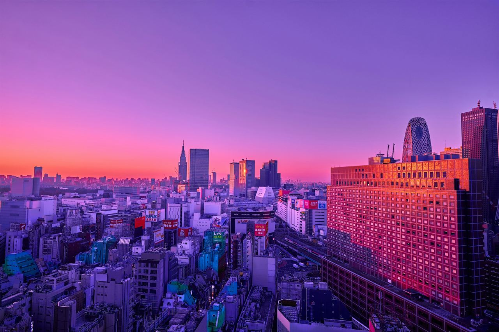
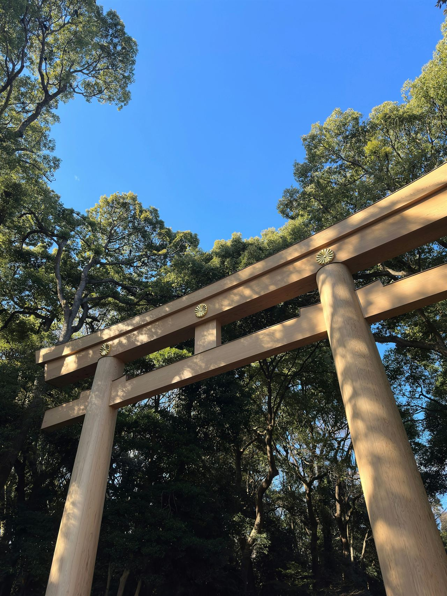
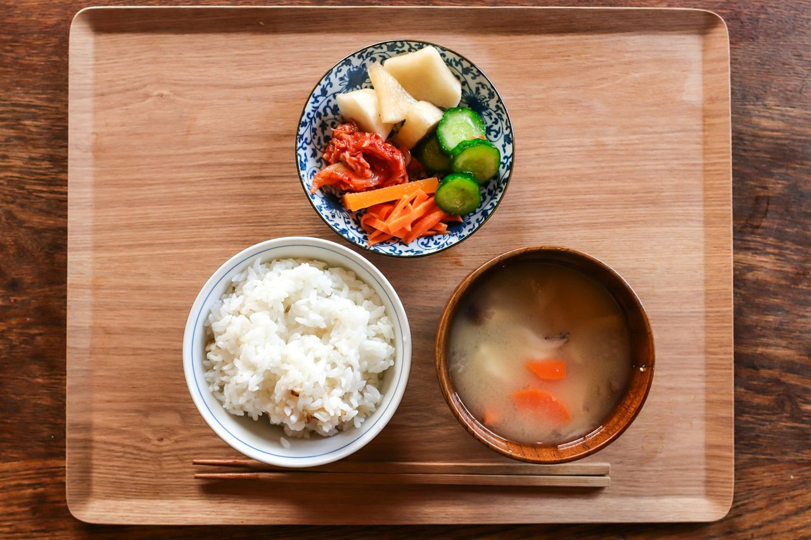
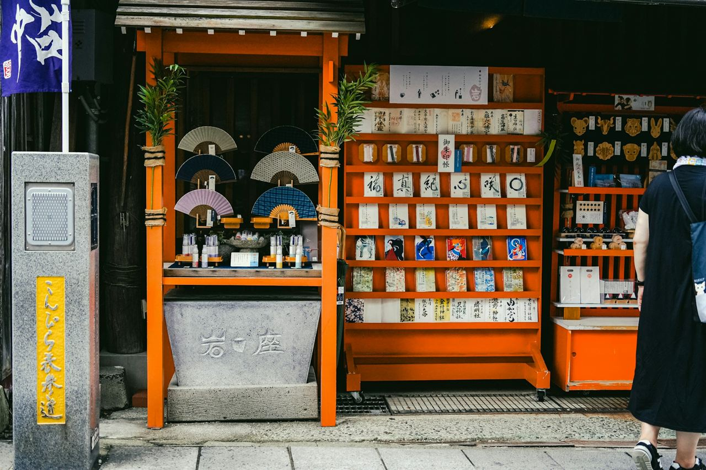
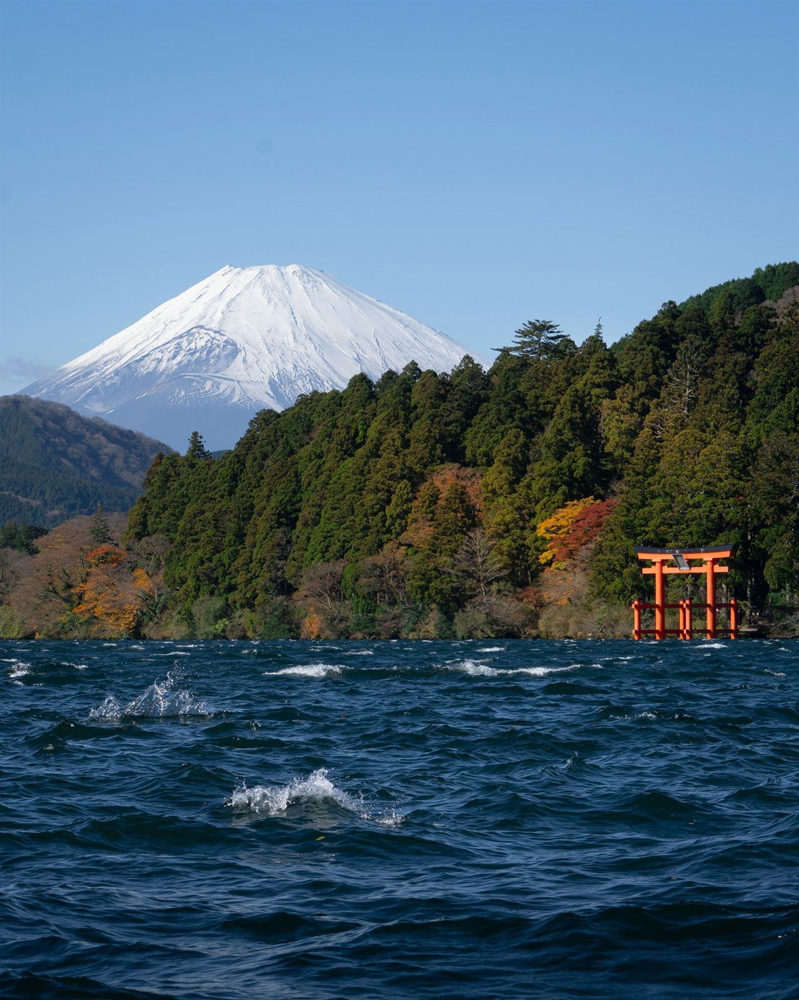

前一晚
21:00
最后一餐，然后安静地过一个晚上。
空腹通常从九点左右开始，有些中心还要求晚些时候停止喝水。通知会写得很精确，照做就好。

目的地 · 日本东京
日本的体检要花上大半天，而且像列车一样准时。下面是典型的一天，逐小时展开，以及做完之后可以去哪儿。
此刻的东京
–
日出 – · 日落 –
东京天际线 · 摄影：Jezael Melgoza
约 ¥73,000
东京有英文服务的诊所，一日标准体检，含税。这是日本居民价，海外访客往往更贵。
10.5–14.5 小时
美国主要枢纽直飞，是三座城市中离西海岸最近的。
1 级
美国旅行警告：采取正常预防措施。
这个词
人間ドック
ningen dokku · 人的船坞
船要定期进干船坞，从龙骨到桅杆检查一遍，这个名字借的就是这个意思。第一次人间 Dock 于 1954 年 7 月在东京进行，当时要住院一周。如今一天就能做完，对很多日本家庭来说，这只是例行保养。
逐小时
时间以东京市中心能提供英文服务的体检中心为例。具体时间由体检中心确定，出发前请让体检中心书面确认。
前一晚
21:00
空腹通常从九点左右开始，有些中心还要求晚些时候停止喝水。通知会写得很精确，照做就好。
体检当天
6:30
神宫的大门在日出时打开，穿过森林的砂石小路上几乎没有人。 这个时候，城里的公园和校园里，人们正在做全日本坚持了将近一百年的广播体操。

体检当天
8:00
你换上中心提供的检查服和拖鞋。大多数中心会给你一个资料夹，跟着你一站一站走，每做完一项就勾掉一项。如果套餐包含翻译，你会在这里见到他。
体检当天
8:30–14:00
标准套餐需要五个半到七个小时：抽血和尿检、心电图、肺功能、胸片、腹部超声、眼科和听力，通常还有骨密度。胃部检查用钡餐 X 光，或者额外付费做胃镜。
体检当天
14:00
有些中心当天下午就讲解结果，有些之后寄送。预约之前，我们会确认是哪一种、由谁翻译，以及英文报告和影像文件什么时候到。

体检当天 14:30
ご飯と味噌汁gohan to misoshiru，米饭和味噌汤
最朴素的日本饭菜，饿了一整天之后，正合适：一碗热米饭、一碗味噌汤、几样爽口的渍菜。
如果做了钡餐，医院会给你泻药帮助排出。多喝水，晚上尽量待在酒店附近。
体检当天
傍晚
几乎每座神社都有御守，就是祈求各种好运的小布袋护身符。保佑健康的叫作“健康御守”（kenkō omamori）。
按习俗，一年后要把它送回神社，这正好是再来一次的理由。

提前知道
处处准时。
列车分秒不差，你的下一个检查站也一样。最好提前一点到。
不一定是胃镜，可能是钡餐。
很多套餐用钡餐 X 光检查胃部。如果你更想做胃镜，提前问，通常要加钱。
安静的车厢。
在车厢里打电话会被侧目。大家都在看书、发消息或者睡觉。
垃圾桶很少。
公共垃圾桶很少见。随身带个小袋子，把垃圾带到便利店或酒店再扔。
不用给小费。
留下钱反而会让人困惑。点头致意、说声谢谢就够了。
纹身和温泉。
有些温泉仍然不接待有纹身的客人。提前问清楚，或者订私人汤池。
学一句
出了体检中心，英文可能不太通，但日本人对愿意开口的游客格外耐心。这四句很管用。
こんにちは
konnichiwa
你好
ありがとうございます
arigatō gozaimasu
谢谢
大丈夫です
daijōbu desu
我没事，没关系
トイレはどこですか？
toire wa doko desu ka?
洗手间在哪里？

第二天
从新宿坐特快大约 80 分钟，箱根是东京人休息的地方：温泉、山中的湖，天气好的时候还能看见富士山。可以的话，在旅馆住一晚。晚餐一小碟一小碟地上，没人催你。
清晨的筑地场外市场
串在竹签上的玉子烧、新鲜的鱼，站着喝一杯咖啡。
谷中
一个有寺庙、小店和猫的老街区。
一家喫茶店
老派的咖啡馆：手冲、不慌不忙，常常很安静。
仅为建议。我们不销售旅游产品，也不从中获得任何收入。
东京的雨夜 · 视频：Mohammad Hedayet Sarker